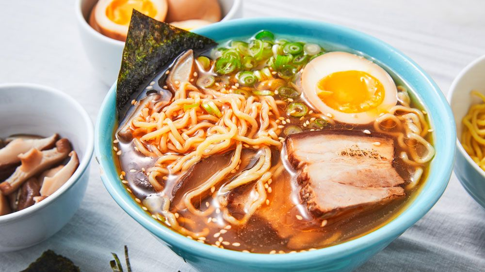

Ultimate Ramen Recipe

Description
THE ultimate ramen recipe
Ingredients
- Sesame oil
- Olive oil (or avocado oil)
- Garlic
- Fresh ginger
- Chicken or vegetable broth
- Rice vinegar
- Low sodium soy sauce
- Sriracha or hot chili garlic sauce
- Shredded carrots
- Shiitake mushrooms (optional)
- Scallions
- Sesame seeds
- Soft-boiled egg